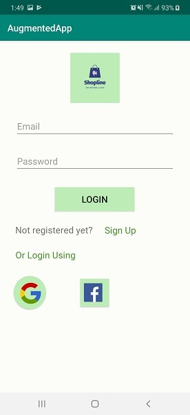

Introduction Goes Here
Architecture Design
The approach/software development will follow is - The model-view-controller (MVC) architecture.
Diagram of the Approach

Details about MVC
MVC stands for Model, View and Controller. MVC separates application into three components - Model, View and Controller. We are using this for our web page application.
Model: Model represents shape of the data and business logic. It maintains the data of the application. Model objects retrieve and store model state in a database.
View: View is a user interface. View display data using model to the user and also enables them to modify the data.
Controller: Controller handles the user request. Typically, user interact with View, which in-turn raises appropriate URL request, this request will be handled by a controller. The controller renders the appropriate view with the model data as a response.
MVC will allow us to handle the following tasks easily:
- Maintain
- Test
- Extend
- Separate Business and View Logic

Details about MVVM
MVVM stands for Model, View, ViewModel.
Model: This holds the data of the application. It cannot directly talk to the View. Generally, it’s recommended to expose the data to the ViewModel through Observables.
View: It represents the UI of the application devoid of any Application Logic. It observes the ViewModel.
ViewModel: It acts as a link between the Model and the View. It’s responsible for transforming the data from the Model. It provides data streams to the View. It also uses hooks or callbacks to update the View. It’ll ask for the data from the Model.
Advantages of MVVM for Android
Lossley coupled architecture : MVVM makes your application architecture as loosley coupled. You can change one layer without affecting the other layers.
Extensible code : You can extends View, ViewModel and the Model layer separately without affecting the other layers
Testable code : You can write unit test cases for both ViewModel and Model layer without referencing the View. This makes the unit test cases easy to write.
3 Component Design
3.1 Database Design
We are using ER model or Entity-Relationship model to desing our database.
Diagram of the Database

Database Discription
Customers: The attributes of this class is : User_id(int) as the primary key,Name(varchar),Password(varchar),Email(varchar). The purpose of this table is to store information of the customers to give them access to the system.
Products: The attributes of this class is : Product_id(int) as the primary key,Product_name(varchar),Product_price(int). The purpose of this table is to store information of different types of product information like its name and price to display them in the system.
Order: The attributes of this class is : Order_id(int) as the primary key,User_id(int) as foreign key,Product_id(int) as foreign key,Quantity(int),Total_price(int). A product can be order multiple times and a customer can have multiple orders.
3.2 Data Transfer
3.3 API Interface
Shopline app will be using the google ARCore which is a collection of API's. Among them the sceneform API is our targeted API to project the 3D model through the camera. First the android menifest files must have "camera permission", "android gLE enabled" "hardware ar camera enabled" and "google ar core". In the dependencies file, the dependency must be included.After the application is fully enabled to use ARCore we can project any 3D model as sceneform object.
We will extend the ARSceneview directly. Then the system will proceed by making an Vision check and then will call setUpSession() to create a session manually.
After the check's passed a session gets created and then by using the rendarable we will finally have a 3D model projection through the camera,on the detected surface. A Renderable is a 3D model that can be placed anywhere in the scene and consists of Meshes, Materials and Textures. model.builder() gets called while rendering the 3D file.(OBJ, FBX, glTF).
3.4 User Interfaces Design
The user interface for the client side shall be the android app and a web-based app. The main UI of the Shopline application will be designed by tabbedActivity. The tabbedActivity will consist of four main interfaces. "Home", "Cart" and "Accounts". The welcome login and signUp page will be designed by following the google material design.



4 Class Design
| Identifications | User |
| Type | Abstact Class |
| Purpose | This class holds the information of the user. |
| Functions | This is a user type data structure. |
| Subordinates | The concrete implementaion of the user actions. |
| Dependencies | Depends on user registration. |
| Identifications | Authentication |
| Type | Sub Class of the User class |
| Purpose | This class allows the user to singIn or signUp on Shopline. |
| Functions | Checks the federated identity provider or user authentication to enable the user to order products. |
| Subordinates | The implementaions in this class will enable the user to continue further. |
| Dependencies | Depends on the validity of the given mail or FIP(federated Identity provider) |
| Identifications | Shopline Login System. |
| Type | Sub Class of the Authentication Class. |
| Purpose | This class allows the user to singIn or signUp on Shopline using any valid email. |
| Functions | Checks the validity of the user input mail and also checks for a standard password. |
| Subordinates | The implementaions in this class will enable the user to create account on the Application. |
| Dependencies | Depends on the validity of the given mail. |
| Identifications | Google Federated Login |
| Type | Sub Class of the Authentication class |
| Purpose | This class allows the user to singIn or signUp on Shopline using Google Federated Login. |
| Functions | Checks the federated identity provider to enable the user to Create Account in Shopline |
| Subordinates | The implementaions in this class will enable the user to continue further. |
| Dependencies | Depends on the validity of the given FIP(federated Identity provider) information. |
5 Database Persistence
5.1 Introduction
In the context of storing data in a computer system, persistence means that the data survives after the process with which it was created has ended. In other words, for a data store to be considered persistent, it must write to non-volatile storage. Given the importance of the data store in most modern applications, making a poorly informed choice could mean substantial downtime or loss of data.
There are four main design approaches that a data store can take to make a database persistence:
1. Pure in-memory, no persistence at all, such as memcached or Scalaris.
2. In-memory with periodic snapshots, such as Oracle Coherence or Redis.
3. Disk-based with update-in-place writes, such as MySQL ISAM or MongoDB.
4. Commitlog-based, such as all traditional OLTP databases (Oracle,SQL Server, etc.)
In Shopline, most of our data is relational.Our database will consist of 2 main tables - the 'User' table and the 'Transaction' table. The user is extended by a 'GoogleCredentials' table if the registered User also has an authenticated Google account. The user has a unique ID and is connected to the Transactions table by the userID. Each user has multiple transactions and thus may have multiple relations. But every transaction is unique with its own transID. This transID is the foreign key for 2 other tables which are considered a subclass of transactions - 'Expenses' and 'Incomes'. An expense can be extended by making it a 'Receipt' which will hold it's OCR image and other details. SQL would've been an ideal choice, but we decided to go with Firebase. Because, it is supported by Google and is very well documented.Firebase hosting offers certain great tools and features to build and manage the static site.It will help us to save and also sync valuable details across numbers of customers.
The ER diagram is as follows:
The purpose of the following table is to keep the records of each user of Shopline.
| Users | ||
|---|---|---|
| Attribute | Type | Purpose |
| ID | Int(10) unsigned | Primary Key |
| Name | Varchar(200) | |
| Varchar(200) | ||
| Password | Varchar(200) |
The purpose of the following table is to keep the records of the products available in Shopline.
| Products | ||
|---|---|---|
| Attribute | Type | Purpose |
| ID | Int(10) unsigned | Primary Key |
| Product_name | Varchar(200) | |
| Product_price | Int(15) unsigned |
The purpose of the following table is to keep records of orders made by each user in Shopline.
| Order | ||
|---|---|---|
| Attribute | Type | Purpose |
| Order_ID | Int(10) unsigned | Primary Key |
| User_ID | Int(10) unsigned | Foreign Key |
| Product_ID | Int(10) unsigned | Foreign Key |
| Quantity | Int(10) unsigned | Total_price | Int(15) |
5.2 Django Framework
Django open-source web framework, written in Python, which follows the model-view-template (MVT) architectural pattern.
Django's primary goal is to ease the creation of complex, database-driven websites. Django emphasizes reusability and "pluggability" of components, less code, low coupling, rapid development, and the principle of don't repeat yourself. Python is used throughout, even for settings files and data models. Django also provides an optional administrative create, read, update and delete interface that is generated dynamically through introspection and configured via admin models.
Despite having its own nomenclature, such as naming the callable objects generating the HTTP responses "views",the core Django framework can be seen as an MVC architecture. It consists of an object-relational mapper (ORM) that mediates between data models (defined as Python classes) and a relational database ("Model"), a system for processing HTTP requests with a web templating system ("View"), and a regular-expression-based URL dispatcher ("Controller").
Also included in the core framework are:
1. A lightweight and standalone web server for development and testing.
2. A form serialization and validation system that can translate between HTML forms and values suitable for storage in the database.
3.A template system that utilizes the concept of inheritance borrowed from object-oriented programming.
4. A caching framework that can use any of several cache methods.
5. Support for middleware classes that can intervene at various stages of request processing and carry out custom functions.
6. An internal dispatcher system that allows components of an application to communicate events to each other via pre-defined signals.
7. An internationalization system, including translations of Django's own components into a variety of languages.
8. A serialization system that can produce and read XML and/or JSON representations of Django model instances.
9. A system for extending the capabilities of the template engine
An interface to Python's built-in unit test framework.
6 Development Design
6.1 Strategy Pattern
Shopline application will mostly be using the strategy pattern. It will try to help develop the application in such a way to optimize scalability. It will help the application stay open for extension and closed for modification. The strategy pattern is a behavioral software design pattern that enables selecting an algorithm at runtime. Instead of implementing a single algorithm directly, code receives run-time instructions as to which in a family of algorithms to use.
6.2 Development Lifecycle Model
From the many existing software development lifecycle methodologies, shopline shall be developed using the 'Agile Method'. The agile method has proven to be highly successful for developments spanning a short amount of time. The approach produces ongoing release cycles, each featuring small, incremental changes from the previous release. At each iteration, the product is tested. The Agile model helps teams identify and address small issues on projects before they evolve into more significant problems, and engage business stakeholders and get their feedback throughout the development process. As shopline is being developed with a small team in a short amount of time, the Agile method seems to be the perfect fit.
7 API and Endpoints
7.1 Google Account Serivces
Shopline will provide users with multiple options to login and register. A user will have the option to register manually or using Google account services which will provide the application the user’s Google account information. Google account services can later be extended in allowing the user to login using their Google accounts, in this case the user must be logged in or login to their Gmail accounts to allow the app to authenticate the user.
7.2 Google ARCore
Google ARCore is a collection of APIs enables developers to project any 3D model into a surface. It quickly detects the surface and then projects the model into the detected surface and can also estimate the average lighting in the area around it.ARCore's understanding of the real world lets developers place objects, annotations, or other information in a way that integrates seamlessly with the real world.
Shopline app will use the sceneform API of the google ARCore to enable the user to view an augmented view of the product before buying it.
In order to use the Google ARCore Sceneform API certain technical prerequisites in terms of the developer must be met:
- The latest version of Android Studio
- Android 7.0 or later
- A device that originally shipped with the Google Play Store
- Internet access, in order to install or update Google Play Services for AR
7.3 Endpoints
Since the application is heavily depended on the features of android mobile devices a common endpoint of the system will be user’s mobile devices.
In addition to that users will also be able to view certain details of their accounts using a web application thus making a laptop or a desktop another possible endpoint of the program.